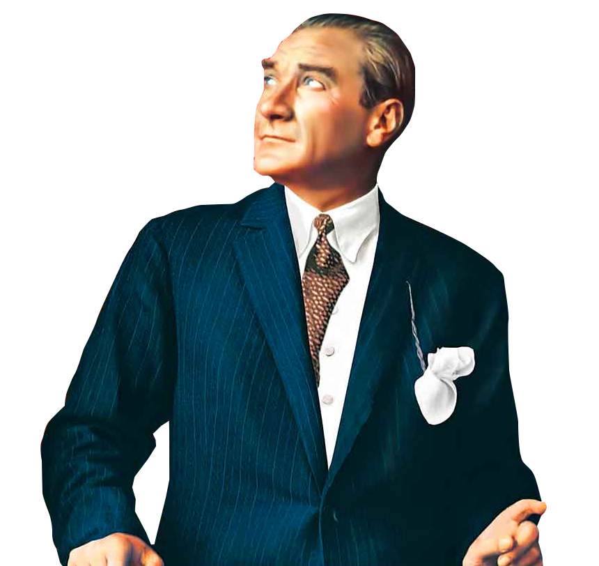

“Peace at Home, Peace in the World.”
- 1881 - Mustafa (Kemal Atatürk) born in Salonica (Selanik, now Thessaloniki, Greece.
- 1888 - Ali Rıza, Mustafa’s father, dies.
- 1893 - Mustafa enters military preparatory school in Salonica.
- 1899 - Mustafa Kemal enters infantry class of War College in Constantinople (now known in English as Istanbul).
- 1902 - Commissioned Second Lieutenant, and enters Staff College.
- 1903 - Promoted First Lieutenant.
- 1905 - Mustafa Kemal graduates from the General Staff College with the rank of Staff Captain and is posted to the Fifth Army, based in Damascus.
- 1906 - Mustafa Kemal and his friends become active in the little known "Fatherland and Freedom" society in Damascus.
- 1907 - Mustafa Kemal is transferred to the Third Army and travels to Salonika.
- 1911 - Mustafa Kemal is transferred to the General Staff in Istanbul.
- 1912 - Mustafa Kemal successfully leads the Tobruk offensive in Libya.
- 1913 - Mustafa Kemal is appointed Military Attaché in Sofia.
- 1915 - Mustafa Kemal is appointed Commander of the Anafartalar Group on the Gallipoli Peninsula.
- 1938 - Ataturk died at five past nine in the morning on November 10 in Dolmabahce Palace. Mourning Turkish citizens came to Istanbul to pay their last respects to Ataturk, until November 19, when the coffin in which his body rested, covered by a Turkish flag, was taken in procession to Sarayburnu. After it was placed onto the battleship Yavuz, it was transported to Izmit and later placed on a specially designated train which travelled at a slow speed throughout the country to enable mourners to pay tribute to their leader. Once the coffin arrived in Ankara on November 20, an official funeral was held on November 21. Dignitaries from many countries attended Ataturk’s state funeral. The coffin was moved in a solemn procession by gun carriage from the Grand National Assembly to the Ethnographic Museum, which had been selected as a temporary resting place until a mausoleum for Atatürk could be constructed.